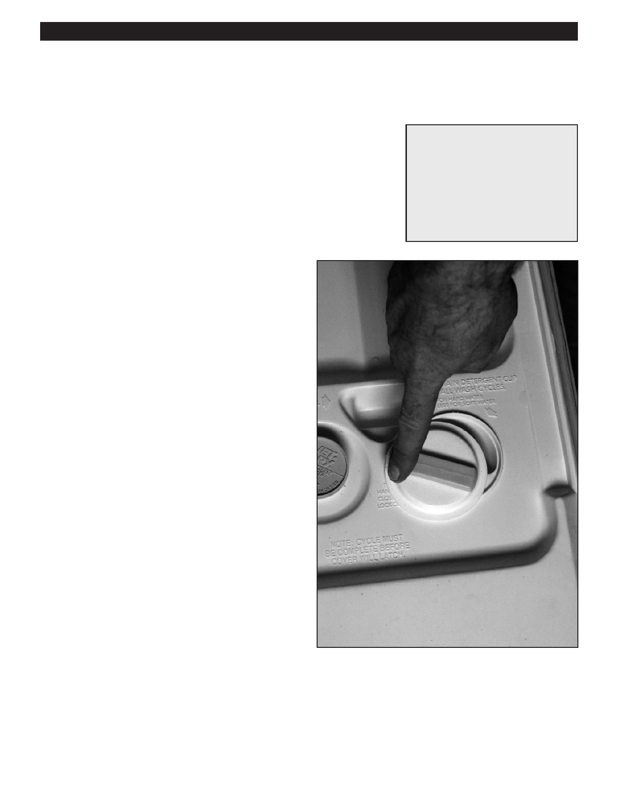

PA RT I C I PA N T R E S O U R C E G U I D E
Replacing a Soap Dispenser
Soap dispensers may become corroded or even break.
Safety
Tools and Materials Needed
Make sure the power to the dishwasher is off.
Screwdriver
Use lockout/tagout procedures.
Insulated combination tool
Lockout/tagout device
Wear eye protection when working with electrical systems.
Multimeter
Wear hand protection when working with corroded material.
Soap and/or rinse agent
dispenser
How-to Steps
1. Unplug dishwasher or turn off electricity to dishwasher
at main electrical panel.
2. Lockout/tagout the panel.
3. Remove caked-on soap on and around the dispenser.
4. Look for a worn or damaged gasket. Replace, if
necessary.
5. Take off inside door panel.
6. If the dispenser is electrically operated:
• Use multimeter on RX1 setting to test soap
dispenser.
• Touch one probe to one terminal and the other
probe to the other terminal.
• If the display shows infinite, the dispenser is bad
and needs to be replaced.
7. If the dispenser is not electrically operated:
• Take off the soap and rinse agent dispensers.
• Look for worn, corroded, stuck, or broken parts.
Replace, if necessary.
• Reattach the new soap and rinse agent dispensers.
8. Attach inside door panel.
9. Turn on electricity to dishwasher.
10. Turn on dishwasher and check operation.
72